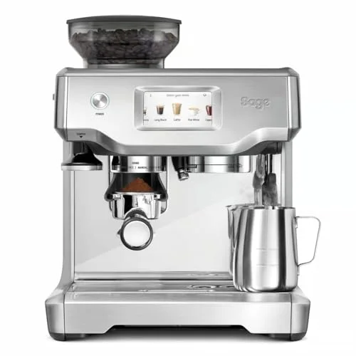

Route
Volg de exacte Google Maps-locatie voor het wooncomplex in Grand Villard, Sauze d’Oulx.
Grand Villard · Sauze d’Oulx
Alles wat u nodig hebt, van aankomst tot vertrek.
01
Volg de exacte Google Maps-locatie voor het wooncomplex in Grand Villard, Sauze d’Oulx.
Bij de ingang staan twee brievenbussen. De RECHTER is van ons. Daarin zit de sleutelkluis. Gebruik de code die u apart vóór aankomst ontvangt. In de kluis liggen de appartementsleutels en de sleutel van de slagboom.
Open de slagboom met de sleutel. In het appartement liggen bij de thermostaat een tweede sleutelbos en de afstandsbediening van de slagboom.
Kunt u niet naar binnen? Stuur ons een WhatsApp-bericht. Als het slot online is, kunnen we mogelijk op afstand openen.
02
Open / Ouvrir / Öffnen / Open / Otwórz ↗
Neem contact op bij vragen of problemen. We kunnen controleren of openen op afstand mogelijk is.
Als hulp ter plaatse nodig is, vertellen we hoe u de conciërge kunt bereiken, afhankelijk van beschikbaarheid.
03
Gebruik de lichtschakelaars en thermostaat. Verander geen technische instellingen. De extra sleutels en afstandsbediening liggen bij de thermostaat.

iliadbox-692FE2769z5qszwbqt54k4q9c2vh
Scan de QR-code hieronder of verbind met iliadbox-692FE2 met het vermelde wachtwoord.
Stroomuitval door overbelasting is onwaarschijnlijk. Controleer bij uitval de groepenkast in het appartement. Als alle schakelaars aan staan, moet mogelijk de meter in de kelder worden hersteld. Neem eerst contact met ons op. Raak geen bedrading aan.
04

Controleer water en koffiebonen. Zet het apparaat aan, maal bonen in de filterdrager, druk gelijkmatig aan, plaats de filterdrager en kies espresso op het scherm. Gebruik voor cappuccino de melkkan en stoompijp. Vraagt het apparaat om reiniging, ontkalking of een nieuw filter? Stel dit indien mogelijk uit en laat het ons weten. Wij verzorgen het onderhoud.
Vul het waterreservoir, zet aan, plaats een capsule, sluit de hendel en kies de gewenste hoeveelheid.
Volg de bediening en gebruik geschikte middelen. Schakel apparaten na gebruik uit.
05
Geen traditionele antenne. Italiaanse zenders via RaiPlay en Mediaset Infinity. Netflix en andere apps kunnen beschikbaar zijn. Gebruik uw eigen accounts en log vóór vertrek uit.
Open / Ouvrir / Öffnen / Open / Otwórz ↗
Zet Bluetooth op uw telefoon aan. Houd de Bluetooth-knop achterop ongeveer twee seconden ingedrukt tot het lampje blauw knippert. Kies “Sonos Era 100” op uw telefoon. U kunt ook via de wifi en de Sonos-app verbinding maken met het bestaande systeem. Reset de speaker niet.
De bank in de woonkamer kan worden omgevormd tot een tweepersoonsbed. Behandel het mechanisme voorzichtig.
06
Bewaar ski’s, fietsen, helmen en schoenen in de daarvoor bestemde berging.
Plaats de skischoenen op de droger en stel de timer in. Dek luchtopeningen niet af.

Open / Ouvrir / Öffnen / Open / Otwórz ↗
Opladen van een elektrische auto is inbegrepen. Laat het ons vooraf via WhatsApp weten: wij moeten het laden op afstand autoriseren. Wacht op onze bevestiging en stop het laden voordat u de kabel loskoppelt.
07
Gaat het alarm af? Controleer eerst op brand. Bij vlammen, veel rook of twijfel: verlaat direct de woning en bel 112. Alleen bij aantoonbaar onschuldige kookrook: zet de bron uit, open de ramen en druk kort op de voorkant van de melder om het alarm tijdelijk te dempen. Informeer ons.
Er is een brandblusser. Gebruik deze alleen als dat veilig kan. Bel bij nood 112.
Controleer bij stroomuitval eerst de groepenkast en neem contact met ons op voordat u iets bij de meter in de kelder doet.
08
Gooi afval weg, haal eigen eten uit de koelkast en laat de woning redelijk netjes achter. Sluit ramen, doe verlichting en apparaten uit en log uit bij streamingdiensten. Professionele schoonmaak is inbegrepen.
Leg de afstandsbediening van de slagboom en de tweede sleutelbos bij de thermostaat. Neem de hoofdsleutels mee naar buiten en leg deze terug in de sleutelkluis in de RECHTER brievenbus. Controleer of de kluis goed dicht is.
Heeft u genoten? Een eerlijke beoordeling op het boekingsplatform helpt ons enorm. Dank u wel!
Koffie met uitzicht op de bergen, een dag op de piste of een ontspannen avond: delen jullie een foto of story van jullie verblijf? Tag dan gerust @softwowcabin op Instagram! We zien de bergen graag door jullie ogen. Voordat we iets delen op ons eigen account, vragen we jullie toestemming.